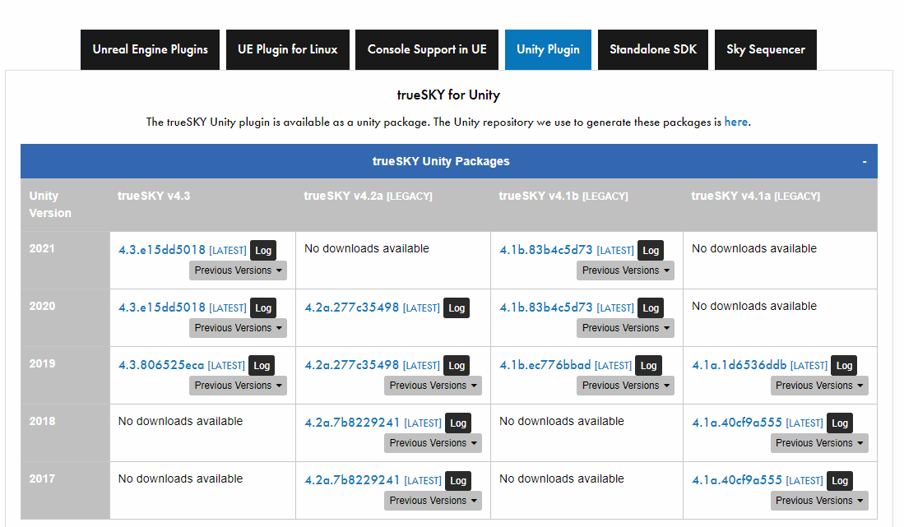
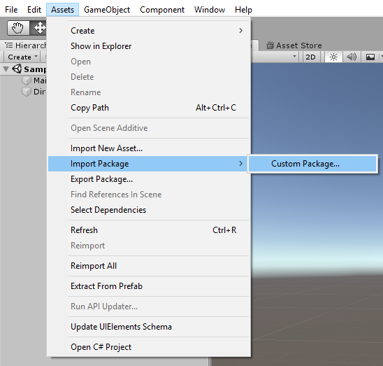
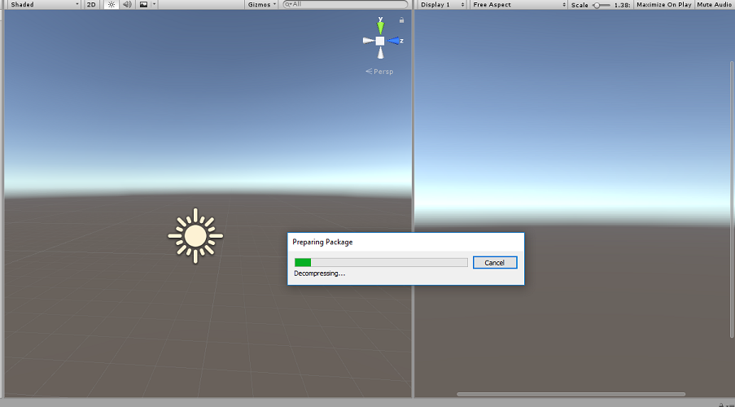
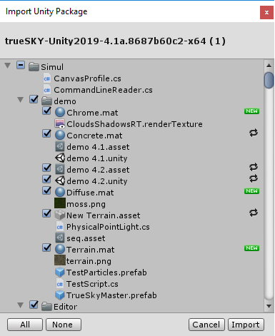
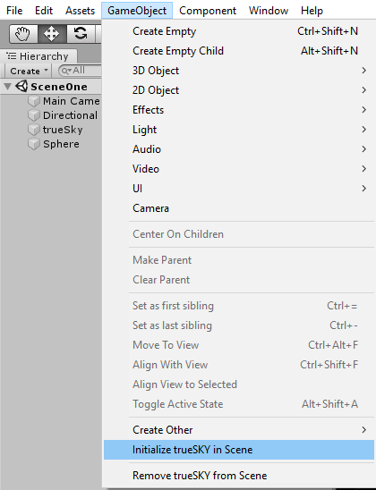
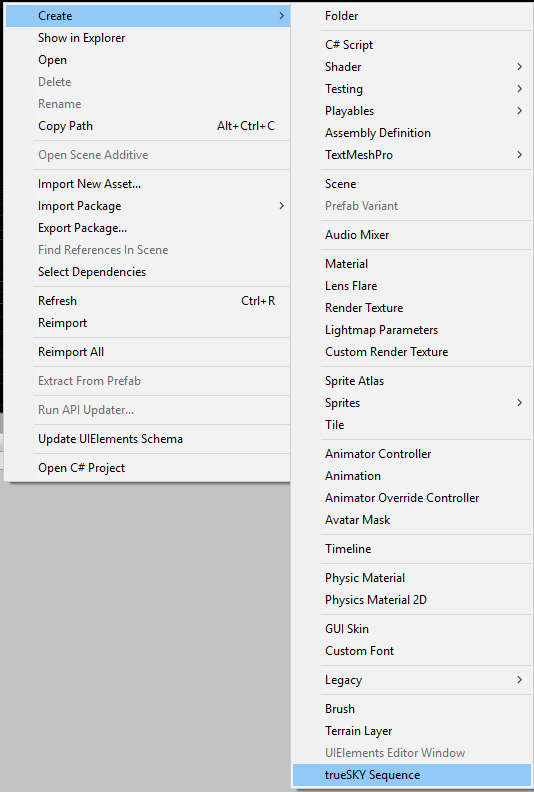
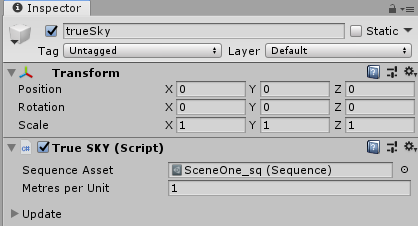

Unity Tutorial¶
Initial Configuration¶
This page shows you how to install the trueSKY plugin for Unity. Head back to Installation if you do not need the Unity Package.
Obtaining the trueSKY Unity Package¶
1: Login to your account at https://simul.co/account. If you have not created an account yet, head over to Getting Started to get setup.
2: Download trueSKY Unity Package from https://simul.co/downloads. Make sure to select the correct engine version you desire, and we always recommend the most up to date version of trueSKY. Be aware Unity has issues importing packages from the downloads folder, so we recommend saving the file in a different directory related to Unity.
Installing the Plugin¶
1: Launch the Unity project that you want to add trueSKY to, or create a new project.
2: Click on ‘Assets -> Import Package -> Custom Package’.
3: Locate and select the trueSKY package you just downloaded.
4: Unity will now decompress the package for your scene. This may take up to 10 minutes, depending on your machine.
5: Unity will ask you which files to import, make sure they are all selected.
Adding trueSKY to the scene¶
1: Open up a project, this can either be a new project or use the provided sample project located at AssetsSimulSimulTest.
2: Click on ‘GameObject -> Initialize trueSKY in scene’ from the dropdown menus at the top of the window.
3: Make sure you have the scene open that you want to initialize trueSKY into, then click next. Otherwise, load up a different scene before starting the initialization.
4: Select one of the preset sequences to be first imported into your scene. If you do not select one, a new sequence asset will be created and assigned. Click next when ready.
5: trueSKY can now either create a new camera, while assigning the trueSKY scripts, or you can select a camera currently in the scene to have the scripts applied to it. Alternatively, trueSKY can be assigned to all cameras in the scene, by selecting the correspoding tickbox. Click next when ready.
6: trueSKY will create a trueSKY game object for your scene, if there is not already one present.
7: trueSKY only needs one directional light, so we recommend you do not use more if possible. If there are no directional lights within the scene, then one will be created.
8: The final step will initialize trueSKY in the scene, while also removing any conflicting assets such as the default skybox and distance fog - trueSKY handles this for you. Click the finish button for trueSKY to appear in your scene with your selected sequence.
Creating New Sky Sequences¶
1: Right click within the Asset Window and click ‘Create -> New trueSky Sequence’, which will appear at the bottom of the options.
2: The new sequence will be created within the asset window.
3: To make this new sequence the active sequence in the world, select the trueSky object from the hierarchy. Then in the inspector, find “Sequence Asset” in the trueSKY script.
4: You can either manually select your sequence from within the Inspector, or you can drag and drop your preferred sequence from the asset browser to the active sequence box.
Now you are almost ready to start creating amazing environments with trueSKY, you just need to activate your license within the sequencer. Head over here to learn how to activate trueSKY, along with how to use the Sky Sequencer to create your own environments.